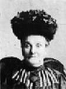

fiche familiale
*******************************************************************************
Guillaume Blais
Père: François Blais
Mère: Marthe Guillemette
Mariage le 2 février 1831 à
St-Anselme, cté Dorchester
Épouse: Marguerite Marceau
Père: Jacques Marceau
Mère: Marie-Josette Roy
*******************************************************************************
 |
Enfant 1 Célina Blais décède à l'âge de 85 ans. Naissance en 1835 Décès le 1 mars 1920 à St-Léon-de-Standon, cté Dorchester Mariage le 18 juillet 1859 à St-Anselme, cté Dorchester Conjoint: François-France Ruel Père: Édouard Ruel Mère: Adélaïde Olivier/Lejeune |
Enfant 2 Louis Blais
Mariage le 9 septembre 1861 à Ste-Hénédine, cté Dorchester
Conjointe: Ursule Blouin
Père: Jean Blouin
Mère: Élisabeth Thibodeau
-------------------------------------------------------------------------------
Enfant 3 Jacques Blais
Mariage le 11 août 1862 à Ste-Hénédine, cté Dorchester
Conjointe: Ombéline Jolin
Père: Michel Jolin
Mère: Émilie Thibodeau
-------------------------------------------------------------------------------
Enfant 4 Isabelle Blais
Mariage le 25 novembre 1862 à St-Malachie, cté Dorchester
Conjoint: Laurent Ruel
Père: Laurent Ruel
Mère: Marie-Anne Roy
-------------------------------------------------------------------------------
Enfant 5 Rose Blais
Mariage le 11 janvier 1859 à St-Anselme, cté Dorchester
Conjoint: Louis Drapeau
Père: Jean-Baptiste Drapeau
Mère: Angélique Létourneau
-------------------------------------------------------------------------------
Enfant 6 Julie Blais
Mariage le 29 août 1880 à St-Léon-de-Standon, cté Dorchester
1er conjoint: Joseph Jolin
Père: Charles Jolin
Mère: Henriette Parent
Mariage le 29 septembre 1907 à St-Malachie, cté Dorchester
2ème conjoint: Vincent Lafontaine
Père: Vincent Lafontaine
Mère: Constance Thibeault
-------------------------------------------------------------------------------
  |
Enfant 7 Marie Blais décède à l'âge de 72 ans. Naissance le 15 avril 1850 Décès le 5 mars 1923 à St-Malachie, cté Dorchester (ses ancêtres) Mariage le 5 octobre 1869 à St-Malachie, cté Dorchester Conjoint: Raymond Henri n. 24 juillet 1843 d. 23 mars 1930. (sa famille) |